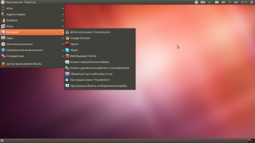
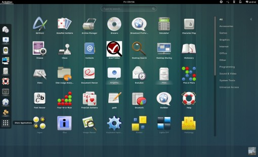
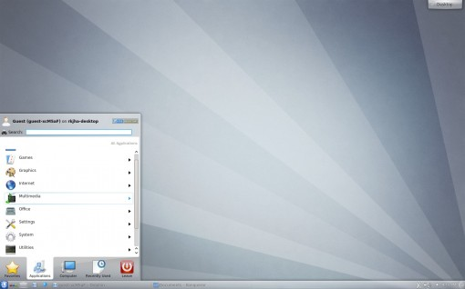
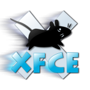
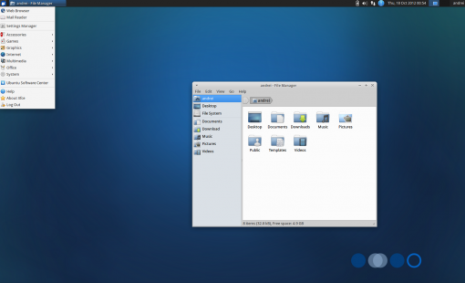
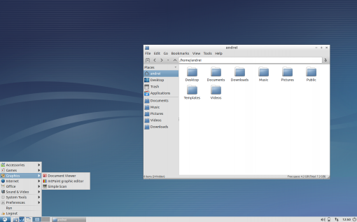
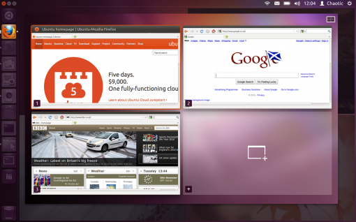
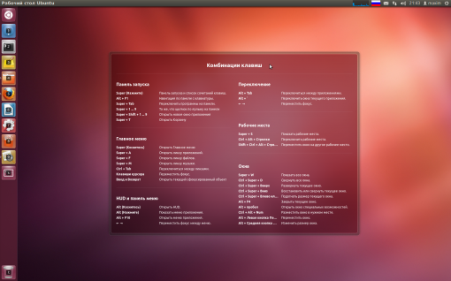

Окружение рабочего стола – это «лицо» любой операционной системы. В данной статье Вы познакомитесь с основными окружениями, которые можно использовать в OS Ubuntu и научитесь интегрировать их в свой дистрибутив.
Но для начала немного истории.
На протяжении долгого времени господствовало три основных окружения: KDE (1996г.), Xfce (1996г.) и GNOME (1997г.). Затем появилась среда LXDE. Каждая оболочка предоставляла что-то свое. Так, например, GNOME имел лаконичный интерфейс, ассоциирующийся со многими операционными системами семейства Linux (Ubuntu, Fedora). Оболочка KDE схожа с интерфейсом OS Windows, из-за чего редко использовалась разработчиками в качестве стандартного окружения. Для малопроизводительных машин идеальными решениями считаются LXDE и Xfce, причем 1-ый вариант похож на KDE, 2-ой – на GNOME. После релиза GNOME 3 с оболочкой GNOME Shell появились новые оболочки, такие как Unity, MATE, Cinnamon.
Здесь будут рассмотрены популярные рабочие окружения, их плюсы и минусы.
Разработчик проект GNOME
Последняя версия 3.6 (26 сентября 2012)
Сайт www.gnome.org
Проект по разработке свободной среды рабочего стола GNOME стартовал в далеком 1997 году как альтернатива KDE. И уже в марте 1999 года была представлена первая стабильная версия.
Проект GNOME предоставляет привлекательную и интуитивно понятную рабочую среду и платформу разработки для создания приложений. Начиная со второй версии GNOME, в развитии проекта большую важность принимают соображения простоты, удобства и практичности использования среды, в том числе для физически ограниченных или неопытных пользователей.
Постулаты проекта:
Историю развития проекта можно разделить на 2 этапа: Классический GNOME (то есть GNOME второй версии) и GNOME Shell (третья версия GNOME).

Рабочий стол GNOME 2 имеет две функциональные панели в нижней и верхней частях экрана. Нижняя панель содержит переключатель рабочих столов и предназначена для переключения между открытыми окнами. На верхней панели располагаются 3 меню: «Приложения», «Переход» и «Система». Кроме этого на панели при необходимости можно расположить иконки быстрого запуска приложений. Правая часть панели содержит область уведомлений и меню для выхода из системы и выключения компьютера. Панели можно перемещать, настраивать, удалять, добавлять на них различные апплеты. Рабочий стол можно использовать для размещения файлов и папок. Интерфейс GNOME 2 хорошо настраивается, при желании можно изменять иконки, темы оформления окон и прочее.

Третья версия GNOME появилась в апреле 2011 года. В ней используется оконный менеджер Mutter и оболочка GNOME Shell. Третий GNOME получил совершенно новый интерфейс и массу функциональных изменений. Интерфейс оболочки изменился кардинально, из-за чего был подвергнут резкой критике со стороны сторонников классического Гнома. Даже Линус Торвальдс негативно отзывается о третьей версии GNOME.
Графическая оболочка GNOME Shell управляет рабочим столом, отвечает за переключение между окнами и запуск приложений. Для полноценной работы GNOME Shell требуется современная видеокарта. Однако для устаревших систем доступен режим совместимости, который основан на классической оболочке GNOME.
Главного меню в GNOME Shell нет. Вместо него появилась специальная область Dash, в которой можно открывать приложения, перетаскивать между рабочими пространствами миниатюры открытых окон и просматривать меню приложений.
С момента выхода первого релиза GNOME3 было написано огромное количество дополнений, но, тем не менее, эта среда никогда уже не станет так популярна, как ее вторая ветка.
После выхода третьего GNOME, стали появляться альтернативные ответвления (форки), такие как MATE и Cinnamon.
Элементы среды рабочего стола и приложения переведены на множество языков, в том числе и русский.
sudo apt-get install gnome-session-fallback
sudo apt-get install indicator-applet-appmenu
sudo apt-get install gnome-shell
sudo apt-get remove gnome-shell
Разработчик Сообщество KDE
Первый выпуск 12 июля 1998
Последняя версия 4.9.4 (4 декабря 2012)
Сайт www.kde.org
KDE SC (Software Compilation ) – это свободная среда рабочего стола и набор тесно интегрированных между собой приложений (офисный пакет Calligra Suite, среда разработки KDevelop, проигрыватель Amarok и других) для выполнения различного рода задач. Среда KDE существенно выделяется на фоне прочих десктопных окружений. Главное отличие в том, что в KDE вместо применяемого в других продуктах движка GTK используется движок Qt. Это позволяет запускать оболочку не только в X Window System (графическая подсистема), но и вне Linux-окружения – в Mac OS X и Microsoft Windows.
Внешний вид KDE напоминает интерфейс Windows 7. На мысль о схожести наталкивают голубые тона оболочки, главное меню и некоторые другие элементы.
KDE4 удобно использовать в том случае, если Вы планируете переход с Windows на Linux и хотите оставить привычный вид рабочего стола. В остальных случаях лучше пользоваться более «легкой» оболочкой и поберечь ресурсы системы.
Интерфейс KDE часто критикуют за наличие множества опций в настройках и сложность в использовании. Кроме того, пользователи сомневаются в стабильности и скорости работы окружения. Это связано в первую очередь с тем, что в ранней четвертой версии KDE содержалось много ошибок, которые приводили к «падениям». Оставляла желать лучшего и производительность, однако на практике при использовании последних версий приложений эта среда не уступает по производительности даже GNOME, основному конкуренту KDE.
Проект KDE спонсируются частными лицами, компаниями (IBM, Dell) и университетами.

sudo apt-get install kde-standard
sudo apt-get remove kde-standard
sudo apt-get install kde-plasma-desktop
sudo apt-get remove kde-plasma-desktop
sudo apt-get install kde-plasma-netbook
sudo apt-get remove kde-plasma-netbook
sudo apt-get install kde-full
sudo apt-get remove kde-full
Автор Оливер Фордан
Последняя версия 4.10 (28 апреля 2012)
Сайт www.xfce.org

Xfce – это легковесное окружение рабочего стола не требовательное к ресурсам ПК. Главное преимущество данного окружения в незначительном потреблении оперативной памяти при наличии современного интерфейса. Xfce включает набор базового ПО для комфортной работы. Настройка среды осуществляется через графические утилиты.
Начат проект Xfce был Оливером Форданом в далеком 1996 году. Первоначально название Xfce означало XForms Common Environment, однако с того времени окружение было дважды переписано и теперь никак не расшифровывается.
Выглядит интерфейс Xfce стильно и современно. На рабочий стол можно помещать директории и файлы. Верхняя часть экрана включает панель, на которой располагаются кнопки переключения между рабочими столами, окнами, а также кнопки для быстрого запуска различных приложений. Кроме того из панели можно вызвать главное меню.
В Xfce поддерживаются темы оформления. С их помощью можно кардинальным образом изменить внешний вид элементов управления и окон.
В качестве оконного менеджера данной оболочки выступает Xfwm, который поддерживает прозрачность окон и некоторые другие эффекты.
Xfce используют в основном в тех случаях, когда хотят получить красивый, функциональный и современный интерфейс на сравнительно слабых компьютерах.
Xfce без особых проблем можно установить во многих Linux-дистрибутивах (например, в Ubuntu). Существует проект Xubuntu, в котором Xfce используется в качестве среды рабочего стола по умолчанию.

sudo apt-get install xfce4
sudo apt-get remove xfce4
Разработчики команда разработчиков LXDE
Последняя версия 0.5.9 (19 мая 2012)
Сайт www.lxde.org
LXDE (Lightweight X11 Desktop Environment) – это быстрая, легковесная, не требовательная к ресурсам среда рабочего стола. В качестве оконного менеджера в LXDE используется Openbox. Интерфейс весьма отзывчивый, меню и окна открываются без задержек.
LXDE может работать на ПК со слабым процессором, малым количеством оперативной памяти, на старых компьютерах. Разработчики утверждают, что LXDE потребляет намного меньше энергии, чем другие окружения рабочего стола.
Начало проекту было положено после презентации файлового менеджера PCMan File Manager в 2006 году. Фактически менеджер стал первым компонентом среды LXDE.
Интерфейс LXDE выглядит очень современно и подойдет для решения большинства повседневных задач. Рабочий стол LXDE по умолчанию содержит одну панель, расположенную в нижней части экрана. Панель содержит переключатель рабочих столов и кнопку вызова главного меню. В правой части размещена область уведомлений. Оболочка поддерживает темы оформления.

sudo apt-get install lxde
sudo apt-get remove lxde
Разработчики Canonical, сообщество Ubuntu, сообщество Ayatana
Первый выпуск 3 июня 2010 года
Последняя версия 6.10 (10 ноября 2012 года)
Сайт www.unity.ubuntu.com
Unity – это свободная оболочка (то есть интерфейс, который Вы видите) среды рабочего стола GNOME, которая разрабатывается компанией Canonical для OS Ubuntu.
Оболочка Unity позволяет эффективнее использовать экраны устройств с небольшой диагональю. Начиная с версии 11.04, оболочка Unity заменила классическую оболочку GNOME и теперь используется в Ubuntu по умолчанию. Но по-прежнему все стандартные приложения и библиотеки берутся из GNOME.
Unity 2D – это упрощенный вариант оболочки Unity, появившийся в Ubuntu 11.10. 2d-версия создавалась в первую очередь для слабых компьютеров с устаревшими видеокартами.
В то же время, классическая оболочка GNOME, которая присутствовала в Ubuntu 11.04, была исключена из состава дистрибутива.
В Ubuntu 12.10 Unity 2D недоступна. Удаление 2d-версии Unity ни в коем случае не означает, что разработчики дистрибутива отказались от запуска Ubuntu на слабых компьютерах. Пользователям вместо этого будет представлена оболочка Unity 3D, которую можно будет запустить при помощи специального драйвера llvmpipe.
Поддержка десктоп-оболочки Unity 2D в Ubuntu 12.04 LTS будет осуществляться в дистрибутиве до апреля 2017 года.
Unity в начале своего существования подверглась значительной критике, так как версия оболочки, включенная в Ubuntu 11.04, изобиловала ошибками и была очень сыра. Кроме того, новый интерфейс пришелся многим не по душе.

Комбинация клавиш Unity в Ubuntu 12.04 LTS

Среди описанных выше окружений рабочего стола нельзя выбрать идеальную среду, потому что у каждой из них есть свои и плюсы, и минусы. Надеюсь, после прочтения этой статьи Вы сможете выбрать то окружение, которое подходит именно Вам.
Иногда при установке альтернативного окружения оболочка из-за несовместимости пакетов становится весьма нестабильной. Поэтому рекомендуется устанавливать отдельный дистрибутив с нужной оболочкой: